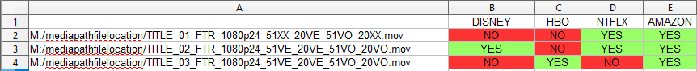
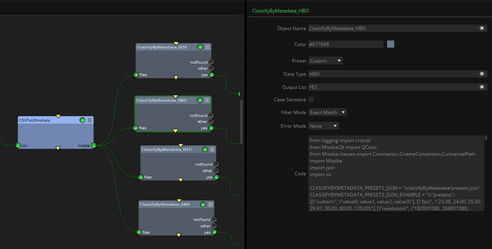
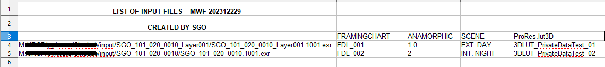
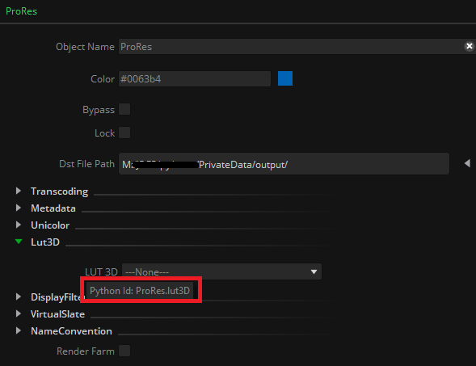
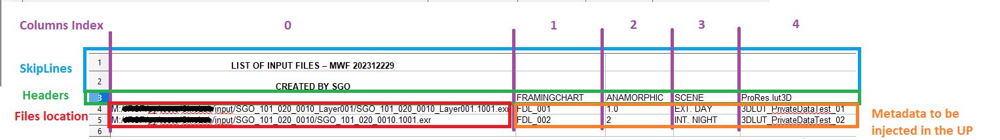
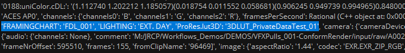

|
<< Click to Display Table of Contents >> CSV to UP metadata |
This node reads user custom metadata from a .csv file (basically a text file with delimiters representing a simple table or spreadsheet), converting it to Mistika Workflows metadata format (UP / Universal Paths) and sending them trough the mdata output connector.
This node is a convenient way to inject your own metadata into Mistika Workflows (either by typing it manually in a.csv table or by exporting a.csv file from any other application)
Each line of the .csv table needs to contain a file path and the metadata values you want to associate to that path. By default, metadata Parameter Name/Value pairs are created by getting the name from the column title and its value from the current row. (but this behavior can be changed in the properties explained below, including the capability to ignore a number of header lines).
An inverse action can be achieved with the MetadataToCSV node.
Use case examples:
Example1 - Classification: A common use case is to parse a .csv file and pass its metadata to a ClassifyByMetadata node for deciding next actions based on the metadata values.
This node can be extremely useful in order to make complex classifications of the input media to process them in different ways. For example, in the case of a multi-mastering environment where each master file must be processed (or not) in several different workflows, we could make a .csv file similar to this one:

Then, after injecting the headers as metadata in the UniversalPath, we can make use of several ClassifyByMetadata nodes to distribute the required jobs based on the .csv table:

Example2 - Changing properties of other nodes: Another use case is by using the PrivateDataa toggle, which permits dynamic modification of the properties of other nodes in the current workflow. For example, you could use it to define which DisplayFilter or LUT3D needs to be applied in a transcoding node connected downstream. In that example, the input .csv file may look something like this:

A full explanation about how to use PrivateData is provided in the SetPrivateData point below.
Example3 - After Effects integration & parameter substitution: Another use case is the After Effects integration. In this case the .csv file is created in After Effects using a Mistika Workflows connectivity plugin, which permits to export the selected parameters (and their current values) to a .csv file. You can then modify the .csv file as needed (typically adding more lines with substitution titles and other versioning metadata), and then load the modified .csv file with this node, which will create the required Universal Paths to give them to an After Effects File node, which will perform the parameter substitution.
csv: The.csv file to be parsed. Typically obtained in one of these ways:
- Drag & drop your .csv file to the Nodegraph, which will create a File node with it. Then connect it to this input connector.
Or
- Create a Watcher node and connect it to this connector. From that point every new .csv landing in the watched folder (or modified afterward) will trigger the workflow execution and will be passed to this node (as long as the workflow is already in the queue panel).
mdata: The list of files contained in the .csv file, alongside the injected metadata in their respective Universal Path.
csvDelimiter: The separator used in the .csv file. It can be tab (\t), comma (,) or semicolon (;)
MediaFilesColIndex: The index of the column that contains the file paths. A column with absolute file paths is mandatory (it is not possible to inject metadata in the UP of a file if the node doesn’t know where is the file, as there could be multiple incoming files with the same name but in different locations ...)
SkipLines: Number of initial lines to be ignored, in the case of existing header lines with information not to be parsed.
SetPrivateData: This toggle allows to dynamically modify the properties of other nodes in the current workflow. The associated metadata header must have the correct syntax, which can be consulted in any node just by clicking on the desired property without moving the mouse. The corresponding value will appear after a few seconds:

GetTokenFromHeader: This toggle gets the headers of all columns and uses them as metadata injected into the Universal Path of the files.
useCustomTokens: Toggle that allows the definition of custom metadata fields, taking their values from a specific column content. It can be useful when not all headers are wanted to be used as metadata, or when headers do not exist at all in the .csv file. Up to five columns can be used as custom metadata fields.

Processing this .csv file alongside the CSV to UPmdata node will lead into the observed added metadata in the UP, which we can see with a pyPrintInputs node in the Script Editor panel:

customTokens: Permits to create user metadata tokens, which each token having a name and a value:
customTokens -> TokenNameX: String literal to name the token.
customTokens -> ColumnTX: Column index where to take the value.